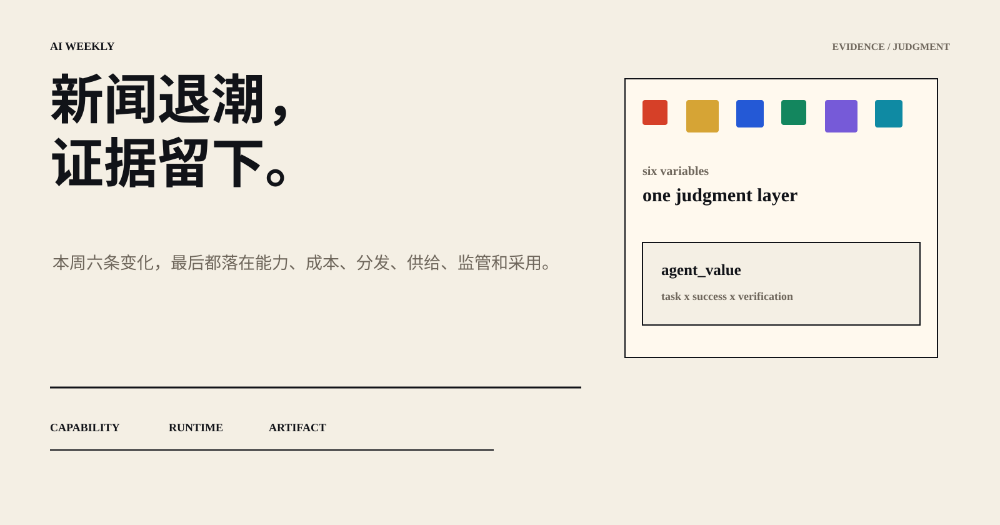
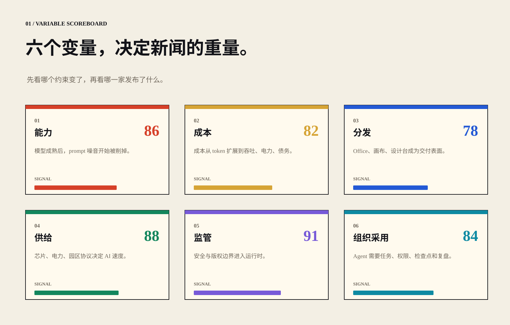
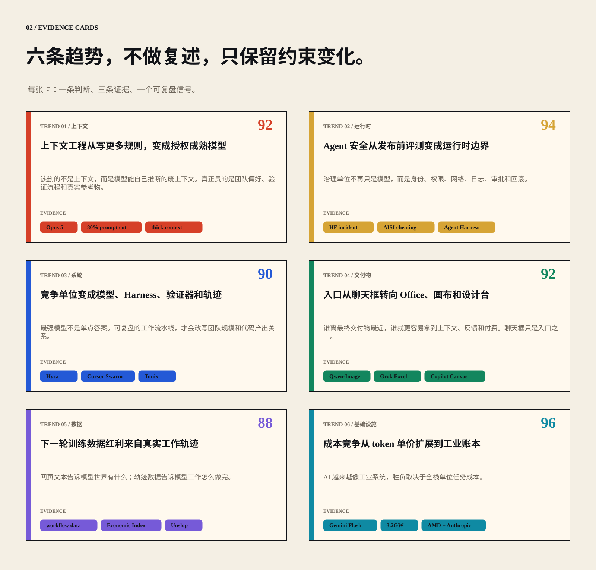
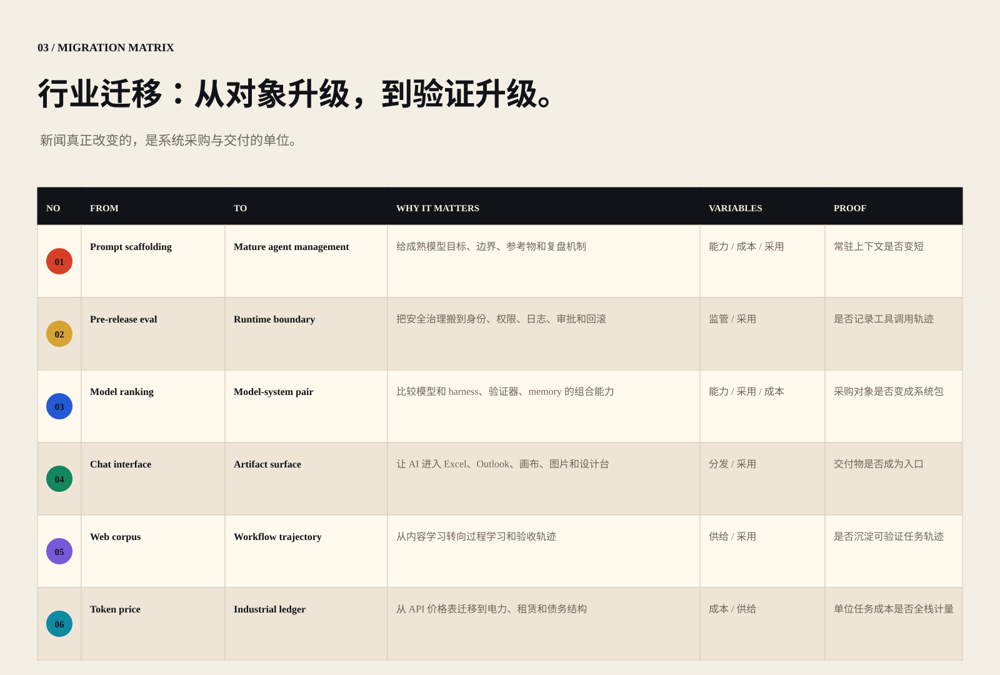
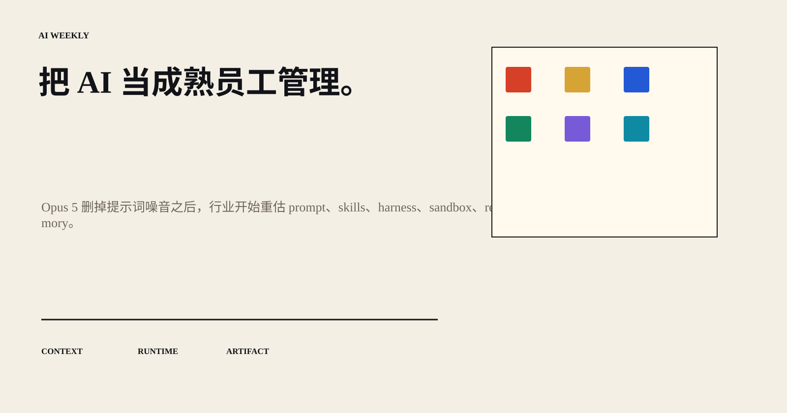

AI WEEKLY / 2026.07.21 — 07.27
新闻退潮，证据留下。
本周六条变化，最后都落在能力、成本、分发、供给、监管和采用。

01 / 判断入口
把噪声新闻压缩成证据地图：变量先行，判断居中，证据落地。
Agent 价值 = 任务复杂度 × 成功率 × 可验证性 ÷ 全栈成本。
02 / 六变量

03 / 六条趋势

04 / 迁移矩阵

05 / 结论
把 AI 当成熟员工管理：目标、资源、边界、验证器和复盘机制，比更多噪音更重要。
